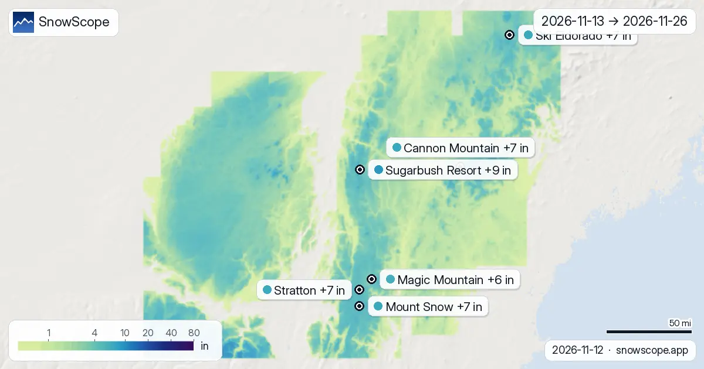

2 località su 4 sopra la norma: la neve nel Nord-est degli USA e gli inverni passati (15 novembre)
2 su 4: tante sono oggi le località nel Nord-est degli USA nettamente sopra la norma. Com'è questo inverno finora? Abbiamo messo la neve di oggi in 4 località nel Nord-est degli USA a confronto con la stessa data in ciascuno dei 46 inverni passati. 2 sono ben sopra la norma. Sul terreno la prima cosa che controlliamo è l'ombra: la neve dura dove il sole non arriva.
Le previsioni neve in tempo reale per Magic Mountain nell'app SnowScopeAltezza neve, allerte powder e mappa 3D, gratis.
Cosa c'è al suolo
Tra i posti citati qui, Magic Mountain è in testa con circa 5 in (13 cm) sui pendii superiori; poi vengono Gore Mountain 4 in (10 cm) e Killington Resort 4 in (10 cm).
In tutta la regione oggi 41 località su 111 nel Nord-est degli USA hanno neve in alto, e il nostro modello trova 6.039 sq mi (15.640 km²) di terreno bianco.
Una parola sui numeri: i valori delle località sono la stima del nostro modello per i pendii superiori, mentre ogni stazione misura un solo punto alla data indicata.
| Località | Altezza neve | Neve fresca, 72 h | In arrivo, prossimi giorni | Quota max |
|---|---|---|---|---|
| Magic Mountain | 5 in (13 cm) | 3 in (8 cm) | 0 in (0 cm) | 2.851 ft (869 m) |
| Gore Mountain | 4 in (10 cm) | 2 in (5 cm) | 0 in (0 cm) | 3.583 ft (1.092 m) |
| Killington Resort | 4 in (10 cm) | 3 in (7 cm) | 0 in (0 cm) | 4.140 ft (1.262 m) |
| Stratton | 4 in (10 cm) | 4 in (10 cm) | 0 in (0 cm) | 3.881 ft (1.183 m) |
Cosa aspettarsi
Le previsioni a qualche giorno possono cambiare: ricontrolla la mappa il giorno prima di partire.
Rispetto ad altri inverni
Niente di insolito a Magic Mountain: 0 in (0 cm) a 2.113 ft (644 m) oggi, più che in 23 dei 46 inverni passati, con 0 in (1 cm) come valore abituale.
A Gore Mountain la neve è più o meno dove dovrebbe essere: 0 in (0 cm) a 2.316 ft (706 m), più che in 21 dei 46 inverni passati (abituale: 0 in (1 cm)).
Killington Resort è partita bene. A 2.651 ft (808 m) il nostro modello indica oggi 2 in (6 cm), più che in questa data in 37 dei 46 inverni passati; l'abituale è 0 in (1 cm).
Buone notizie da Stratton: 3 in (7 cm) a 2.936 ft (895 m) oggi, più che in 43 dei 46 inverni passati in questa data (abituale: 0 in (1 cm)).
Consigli per sciatori
- I versanti sud prendono più sole e fondono per primi; i versanti nord in quota tengono la neve più a lungo.
- Neve sulla mappa non significa località aperta: controlla impianti e date di apertura sul sito della località.
- La neve di inizio stagione è sottile. Resta sulle piste aperte e battute: sassi ed erba sono appena sotto.
- Attiva un avviso powder nell'app SnowScope per sapere quando Magic Mountain riceve neve fresca.
Su questi numeri
Le altezze neve delle località sono la neve più alta sui pendii superiori secondo il modello neve di SnowScope (circa 1 km, calcolo del 15 novembre); sono stime per un'area, non una misura in un punto. I valori delle stazioni sono misure alla data indicata. Le previsioni possono cambiare. Leggi sempre il bollettino valanghe ufficiale prima del fuoripista.
Bollettini valanghe ufficiali: Mount Washington Avalanche Center
Cita questo articolo
Per ricerca, didattica o stampa: numeri e grafici sono liberamente riutilizzabili con licenza CC BY 4.0 citando così.
SnowScope (2026), 2 località su 4 sopra la norma: la neve nel Nord-est degli USA e gli inverni passati (15 novembre), https://snowscope.app/blog/it/2026/11/us-northeast-snow-vs-past-winters-15-november-2026.html, consultato il 2026-11-15
SnowScope (Atlas Labs). (2026, November 15). 2 località su 4 sopra la norma: la neve nel Nord-est degli USA e gli inverni passati (15 novembre). SnowScope snow reports. https://snowscope.app/blog/it/2026/11/us-northeast-snow-vs-past-winters-15-november-2026.html
BibTeX
@misc{snowscope2026usnortheastsnowvspastwin,
author = {{SnowScope (Atlas Labs)}},
title = {2 località su 4 sopra la norma: la neve nel Nord-est degli USA e gli inverni passati (15 novembre)},
year = {2026},
month = nov,
howpublished = {\url{https://snowscope.app/blog/it/2026/11/us-northeast-snow-vs-past-winters-15-november-2026.html}},
note = {Published 2026-11-15 20:22 UTC; accessed 2026-11-15}
}· CC BY 4.0 · Metodi, dati e strumenti →
Magic Mountain: neve e temperatura per quota, quest'inverno vs lo scorso (strumenti) →
Segui Magic Mountain
Gratis: un messaggio quando arriva la neve e il meteo ogni mattina.
Altri bollettini neve

Bollettino neve nel Nord-est degli USA, 11 novembre. Fino al 14 novembre la previsione indica 15 in (38 cm) a Okemo Mountain, 12 in (30 cm) a …

Lo zero termico nel Nord-est degli USA, prossimi giorni: tra 1.936 ft (590 m) e 6.037 ft (1.840 m). Ore più miti: quota neve circa 984 ft (300 m) più …

Dove nevicherà nel Nord-est degli USA tra il 13 novembre e il 26 novembre, e quanto? Abbiamo interrogato i due modelli globali che arrivano a due …